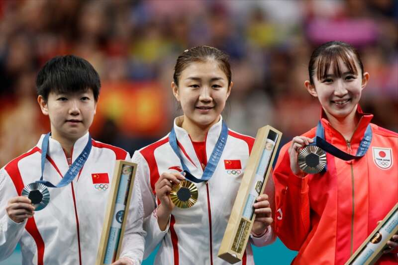
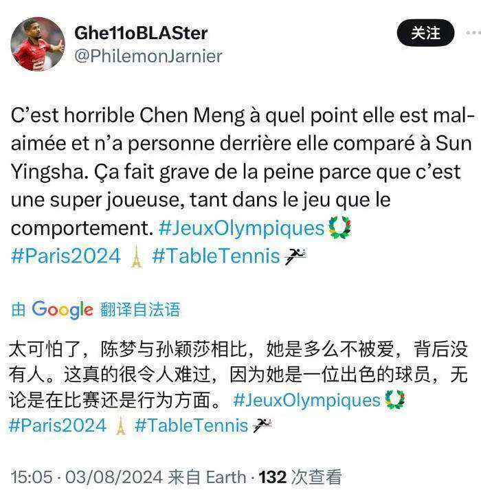
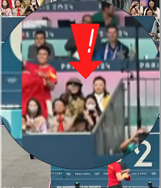
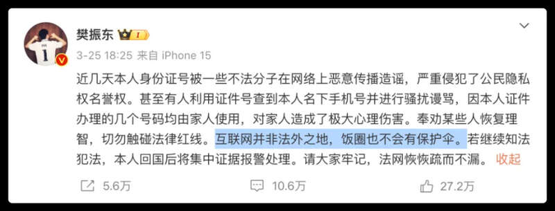
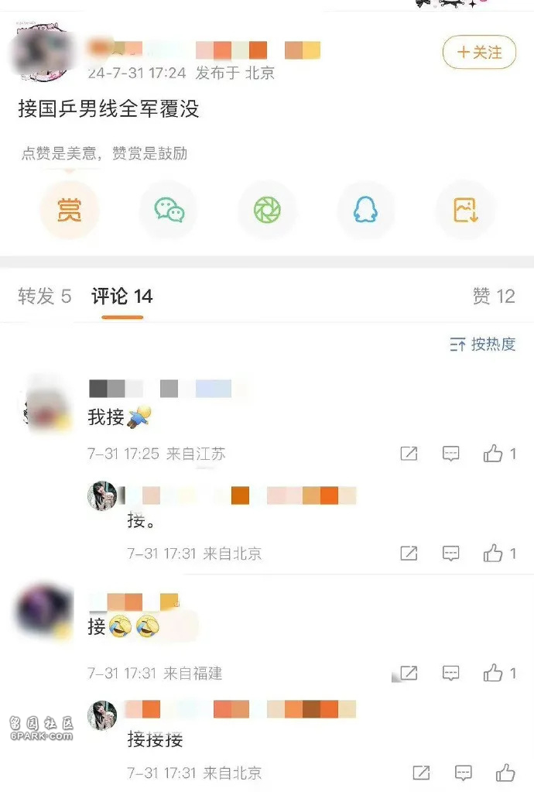
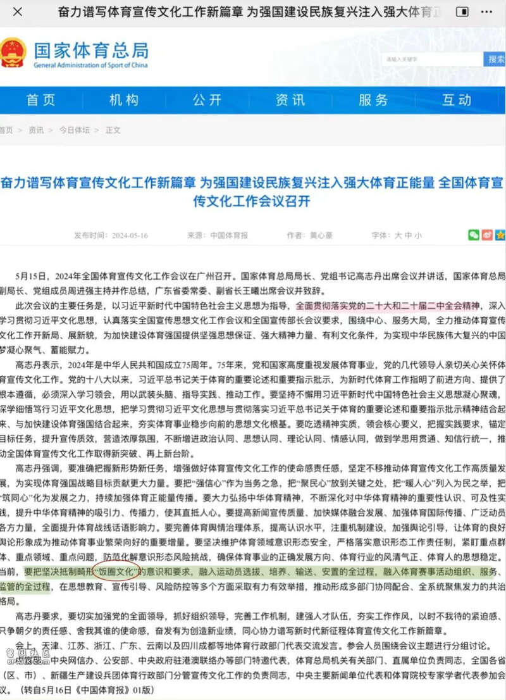

一场中国内战，陈梦击败孙颖莎拿到了奥运冠军。
但让外界感到不解的是，在巴黎的现场，为孙颖莎呐喊的声音此起彼伏，但支持陈梦的声音却寥寥无几。
就连专业平台的解说，也在不停地给孙颖莎支招。
仿佛这场比赛孙颖莎的对手不是陈梦，而是一个外国运动员。

更为让大家感到愤怒的是，有现场的中国球迷对着陈梦竖中指、口吐芬芳。这一番操作不仅引发了大多数国人的不满，就连不少外国也感到惊讶。老外们也无法理解，为何中国内战，现场的中国球迷捧一踩一。

而一场内战，之所以把陈梦搞成了“全民公敌”，这就是恐怖如斯的饭圈力量。
客观地说，孙颖莎的打法，以及她在镜头前的“表达”确实比陈梦更为吸粉；所以她拥有比陈梦更多的粉丝，一点都不奇怪。
只是这些粉丝，她们恐怕并不是乒乓迷、体育迷，他们只是孙颖莎的人迷。所以当陈梦作为对手出现在孙颖莎面前的时候，孙颖莎这些粉丝并没有把陈梦当成孙颖莎的队友，他们是把陈梦当成敌人。所以当孙颖莎被陈梦击败的时候，迎接陈梦的并不是喝彩，而是来自于孙颖莎人迷的各种侮辱、谩骂。

然而这种人迷是孙颖莎想要的么？恐怕并不是！这只会在无形中给她增加更大的压力，反倒是没有人迷，没有压力的陈梦，成为发挥更好的一方。陈梦的登顶，让孙颖莎的人迷彻底陷入了“疯狂”之时，也招来了舆论更多的反感。
那么中国体育的饭圈化到底从何而来？这一切要从2016年里约奥运会说起。
在2016年之前，运动员和球迷（体育迷）之间的最常见距离就是，你在赛场，我在看台。你出征我送行，你回归我接机，要要签名合合影，送束鲜花，这个距离保持的刚刚好。
但所有的转折发生在2016年里约奥运会，那届奥运会打完，中国乒乓球队和中国女排、跳水、游泳等项目的运动员圈粉无数。很多对体育知之甚少的粉丝开始大量涌现，规模越来越大，更多的应援组织也应运而生。
圈粉越来越多，也导致了粉丝质量的鱼龙混杂。然后出现了跟运动员相关的“利益链”，比如出售运动员个人信息，出售运动员签名照，贩卖运动员周边产品。而疯狂的人迷甚至开始跟机、跟酒店；运动员所到之处，都会有大量粉丝聚集，这也让很多运动员感到困扰；樊振东就曾公开发声：“互联网不是法外之地，希望大家能尊重彼此的隐私”。

而在部分运动员对饭圈化感到困扰的同时，同样有部分运动员早已深陷其中。
由于粉丝有持续生产数据、制造话题的能力，很大程度上决定了体育明星的市场价值。因此有些运动员一边对频繁受到人迷的骚扰感到困扰，另一边也希望有更多的粉丝把他们推向顶流。只要他们成为顶流，就可以拿到更多的代言，上更多的综艺。
在利益的驱动下，运动员背后的团队，开始主动通过营销向人迷靠近。
在中国乒乓球队，张继科、马龙能红的前提，是他们的实力到了那一步，通过比赛表现引发了更多关注，大家从他们身上发现了更多的“亮点”。
奥运会、世界杯、世锦赛这三个重要的锦标，马龙一共拿到了8个，全满贯都已经两圈了；樊振东也拿了6个，就差奥运也就是全满贯了。
而当营销和运动员竞技实力并不匹配的时候，很容易让人觉得有炒作的嫌疑。
以这届奥运会为例，王楚钦男单出局，本来就已经情绪很差了，但有部分人迷竟然在他出局后去诅咒樊振东也出局时，这就导致原本很多对他无感的朋友，也生出了逆反心理。

同样的，原本孙颖莎和陈梦打，大家都是站在欣赏的角度去看比赛；因为不管谁拿金牌，都是中国赢了。但因为孙颖莎的饭圈太严重了，当陈梦遭受了很多无端攻击，把大多数中立球迷搞烦了，也直接导致着打着，网上有越来越多的人朋友开始支持陈梦。
竞技体育，成绩才是硬道理。但因为“营销”，有的运动员拿了冠军要被骂，有的运动员无论拿到什么成绩都有人辩解，这对这个行业、对运动员本身都是一种亵渎，也引发了有关方面的关注。
5月中旬，国家体育总局在全国体育宣传文化工作会议上表示，全国体育系统将全过程坚决抵制畸形“饭圈文化”对体育领域的侵蚀，并在会议上强调，“饭圈”乱象对运动员身心健康成长、运动队为国争光能力、体育事业可持续发展都极为不利。
体育不应该、也不允许成为畸形“饭圈文化”继续滋生的“引线”和“温床”。解决这一问题刻不容缓，全国体育系统必须高度警惕、快速行动。

现在回过头来看，总局的会议并没有把有些人迷打醒。王楚钦出局后诅咒中国男单丢冠军、陈梦夺冠后竖中指，都出现在镜头里了。
整治体育饭圈化，可以考虑从整治国乒饭圈化开始！